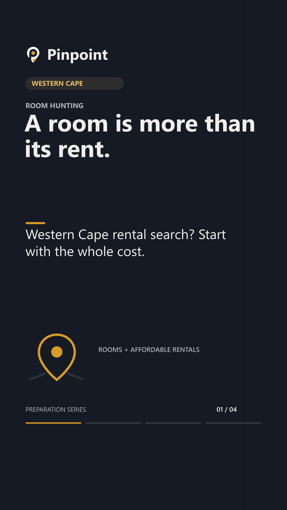

Start with the full rental picture.
Renters
Looking for a room in the Western Cape? Start with the full picture: the monthly rent, what is included and the amount due before moving in. Pinpoint is preparing its rooms and affordable-rentals launch. Follow for rental updates and practical questions to use in your search.
Download MP4